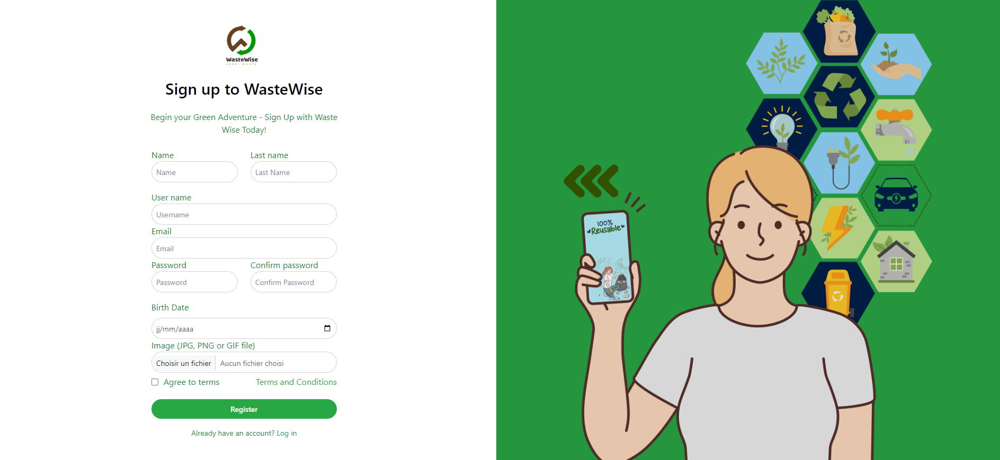
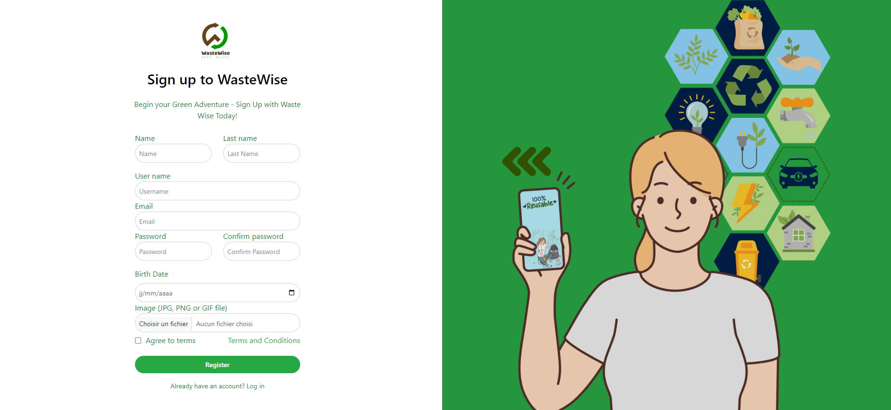

← Retour aux projets
Objectif
L’objectif de WasteWise est de numériser et simplifier la gestion
des déchets au sein des villes et quartiers. L’application vise à encourager
les bonnes pratiques environnementales, réduire les dépôts sauvages et faciliter
la collaboration entre citoyens, associations et responsables de collecte.
- Sensibiliser la population au recyclage.
- Réduire les déchets abandonnés dans l’espace public.
- Digitaliser la collecte, le tri et le transport des déchets.
- Améliorer la communication entre citoyens et associations.
- Créer un écosystème écologique moderne et fonctionnel.
Objectifs fonctionnels
- Permettre aux utilisateurs de déposer des demandes de collecte.
- Informer sur les bonnes pratiques de recyclage.
- Proposer un tableau de bord pour l’admin et les associations.
- Assurer un système d’authentification complet (citoyen, admin, association, drivers…)
- Permettre la gestion des zones, déchets, catégories et itinéraires.
Objectifs techniques
- Développer un FrontOffice ergonomique et responsive.
- Implémenter un BackOffice complet avec statistiques.
- Assurer la rapidité, sécurité et robustesse du système.
- Utiliser une architecture MVC avec Symfony.
- Gérer la base de données via MySQL pour les données de tri.
Technologies utilisées
Backend
- Symfony (PHP)
- MySQL
- Architecture MVC
Frontend
- HTML / CSS / JavaScript
- UI responsive
- Maquettes & design système
Conception
- Diagramme de cas d’utilisation
- Diagramme de classes
- Maquettes (Figma / Adobe XD)
Autres
- Gestion des rôles
- BackOffice + FrontOffice
- Notifications & suivi des demandes
=
Mise en route (installation)
git clone <url_du_repo>cd WasteWisecomposer install- Configurer la base de données dans
.env
php bin/console doctrine:database:createphp bin/console doctrine:migrations:migratesymfony server:start
Licence
WasteWise est un projet étudiant développé dans un cadre académique.
Aucune licence open source n’est encore appliquée.
Contributions
Bien que WasteWise soit un projet académique, il a été structuré comme
une véritable application professionnelle afin de faciliter l’évolution future du système.
Plusieurs axes de contribution ont été définis pour améliorer et étendre le projet.
🔧 Contributions techniques
- Refactorisation du code Symfony selon les bonnes pratiques MVC.
- Amélioration de la gestion des rôles et de la sécurité (authentification, permissions, accès).
- Optimisation des requêtes SQL pour les modules de collecte et de gestion des déchets.
- Création d’un BackOffice complet pour l’administration du système.
- Implémentation d’alertes et de notifications dynamiques (email / UI).
🎨 Contributions UI / UX
- Conception d’interfaces modernes et responsives (FrontOffice & BackOffice).
- Création des maquettes de navigation (Figma / Adobe XD).
- Expérience utilisateur améliorée pour déposer, gérer et suivre les déchets.
- Guides de couleurs, typographies et composants réutilisables.
📘 Contributions documentaires
- Rédaction de la documentation d’installation et de déploiement.
- Création des diagrammes UML (cas d’utilisation, classes, acteurs).
- Rédaction du manuel d’utilisation pour les rôles : citoyen, admin, association, driver.
🚀 Contributions futures possibles
- Ajout d’un système de gamification pour encourager le recyclage.
- Intégration de statistiques avancées (tableaux, graphiques).
- Ajout d’une API mobile pour une application Android / iOS.
- Reconnaissance des déchets via IA / computer vision.
Ce projet reste ouvert aux améliorations futures dans une logique de développement durable,
d’innovation citoyenne et de valorisation des données environnementales.


 
